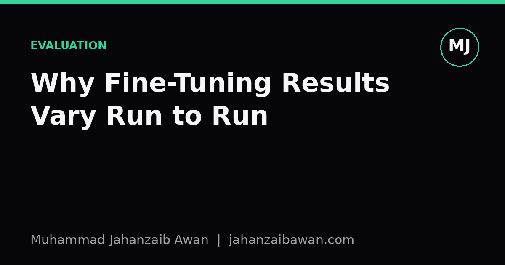

Why Fine-Tuning Results Vary Run to Run
A single accuracy number from one training run tells you almost nothing. Here is why fine-tuning is noisy, and how to report results so other people can trust them.

The same code, the same data, a different number
Anyone who has fine-tuned a model more than once has met this problem. You run the exact same script, same hyperparameters, same dataset, same split, and you get a different final accuracy. Not wildly different, but enough to matter: 82.1 percent one time, 83.6 percent the next, 81.4 percent the time after that. If you only ever ran it once and reported 83.6 percent as the result, you have told a story that is at least partly fiction.
This variance is not a bug in your code. It is a structural feature of how neural networks are trained. Weight initialisation is random. The order in which mini-batches are shuffled is random. Dropout masks are random. On GPUs, certain parallel reduction operations are not even guaranteed to produce bit-identical results across runs due to floating point summation order. Every one of these sources of randomness nudges the optimisation trajectory, and fine-tuning, where you are often adapting a large pretrained model on a comparatively small dataset, is especially sensitive to that nudge because there is less data to average the noise out.
The practical consequence is that a single number from a single run is a sample from a distribution, not a fixed property of your method. If someone else tries to replicate your result and lands two points lower, that is not necessarily evidence they did something wrong. It might just be the seed they happened to draw. Treating one run as ground truth, and then building a paper, a blog post, or a business decision on top of it, is how a lot of apparent improvements turn out to be noise when someone checks more carefully.
Where the variance actually comes from
It helps to separate the sources of run-to-run variance because they behave differently and some matter more than others depending on your setup. The first is initialisation and ordering randomness, which I mentioned above: different seeds give different starting points and different gradient update sequences, which can land the model in different regions of a complicated loss surface. Fine-tuning often involves a newly initialised classification head sitting on top of pretrained weights, and that head's random start can have an outsised effect on a small dataset.
The second is data ordering and batching, which interacts with the first. With small datasets and small batch sizes, the specific sequence of examples the model sees early in training can push it towards a different local solution. This matters more when your training set is a few thousand examples than when it is a few million, because with more data the gradient estimates are smoother and less dependent on any particular ordering.
The third, and the one people forget most often, is the evaluation split itself. If your validation or test set is small, say a few hundred examples, then the measured accuracy has its own sampling noise on top of the training noise. A model that is truly identical in quality can show a swing of a percentage point or two simply because the test set is small enough that a handful of borderline examples flip from correct to incorrect. Combine that with training variance and you get a number that moves around for two independent reasons, which is easy to misread as one.
A concrete illustration: suppose you fine-tune the same model five times with different seeds on a dataset where the true underlying performance is around 82 percent, and your test set has 400 examples. You might see results like 80.5, 83.0, 81.8, 84.1, and 82.6. The spread here, roughly three and a half points from lowest to highest, is entirely plausible for this scale of data and says nothing about your method being unstable in some exotic sense. It is just what noise looks like at this sample size.
Reporting it honestly
The fix is not complicated, it is just more work than reporting a single number, which is exactly why people skip it. Run your fine-tuning procedure multiple times, ideally five or more, with different random seeds, keeping everything else fixed. Report the mean and the standard deviation, or the full range, rather than the single best or single most convenient run. If you are comparing two methods, compare the distributions, not the best cherry from each basket.
This changes how you read small differences. If method A gets 83.6 mean with a standard deviation of 1.2, and method B gets 82.9 mean with a standard deviation of 1.4, you do not have strong evidence that A beats B. The overlap between those distributions is large relative to the gap between the means. A proper comparison, using something like a paired test across matched seeds or a bootstrap over the test set, will often tell you the difference is not distinguishable from noise, even though the headline numbers look different.
It also changes what counts as a meaningful improvement claim. If your baseline varies by two points across seeds, then a new technique that improves the mean by half a point is not something to build a strong claim around, however exciting that half a point feels. You need either a much larger effect size or a much larger number of runs, or ideally both, before you can say with any confidence that the improvement is real rather than a lucky draw.
None of this means you should abandon single runs entirely, resources are finite and sometimes one careful run with a fixed, documented seed is all a project can afford. But if you only have one run, say so plainly. Report the seed, report that variance was not measured, and resist the temptation to present the number as more solid than it is. The honest version of a result is often less impressive than the cherry-picked version, but it is the only version that survives contact with someone else trying to reproduce it.